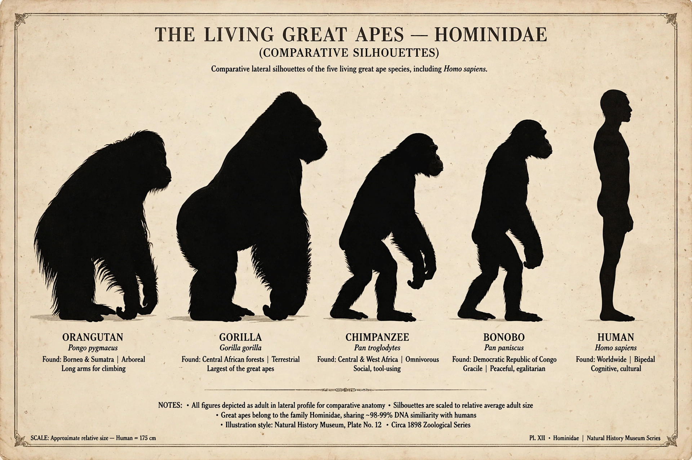

Hominidae

| Hominidae (great apes) | |
| Kingdom | Animalia |
|---|---|
| Order | Primates |
| Family | Hominidae |
| Subfamilies | Ponginae, Gorillini (tribe), Homininae |
| Living genera | Pongo (orangutans), Gorilla, Pan (chimpanzees and bonobos), Homo |
The Hominidae, or great apes, are a taxonomic family of primates comprising eight living species in four genera: orangutans (Pongo), gorillas (Gorilla), chimpanzees and bonobos (Pan), and humans (Homo). Native to Africa and Southeast Asia, hominids are the largest primates, characterised by relatively large brains, no external tail, and flexible shoulder joints adapted for suspension and, in the human lineage, for freeing the hands through habitual bipedalism.
Classification
Until the late 20th century, classification placed humans alone in Hominidae and the great apes in Pongidae. Genetic evidence showing that chimpanzees are more closely related to humans than to gorillas overturned this arrangement. Modern classifications place orangutans in the subfamily Ponginae and gorillas, chimpanzees, and humans in Homininae. The human lineage after the split from Pan is the tribe Hominini; fossil members include Homo habilis, Homo erectus, the Neanderthals, and early forms such as the Taung Child (Australopithecus africanus).
Characteristics and behaviour
Great apes display prolonged childhoods, complex social learning, tool use, and elements of culture that vary between populations. Orangutans are the most solitary and arboreal; gorillas live in harems led by a silverback male; chimpanzees form large fission–fusion communities; bonobos are known for comparatively egalitarian, female-centred societies. All non-human hominids are classified as endangered or critically endangered, threatened by habitat loss, hunting, and disease.
Evolution
The hominid lineage diverged from the gibbons (Hylobatidae) roughly 15–20 million years ago; the orangutan line split about 14 million years ago, gorillas about 8–9 million years ago, and the human and chimpanzee lineages about 6–7 million years ago. Fossil apes such as Proconsul and Dryopithecus document the family's Miocene radiation across Africa and Eurasia.